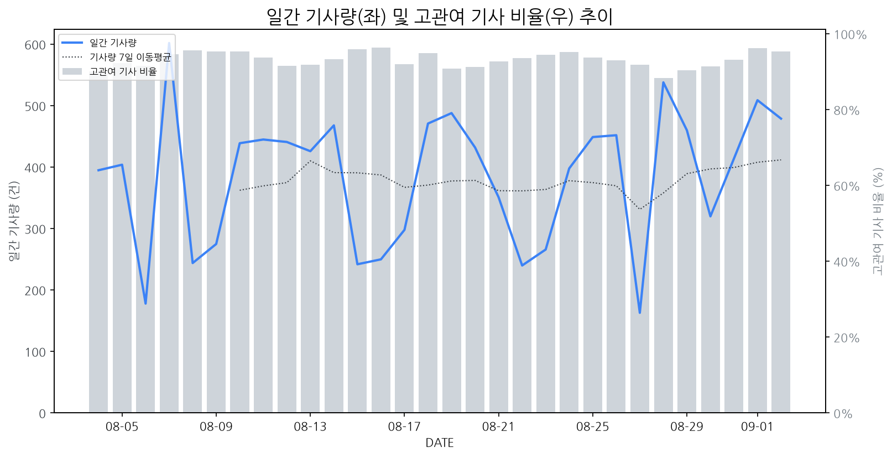

1
시장 활동 지표
기사량 추세 & 이상 징후 탐지
시장의 '전체 기사량'이 평소보다 비정상적으로 급증했는지(Spike)를 차트로 확인하고, LLM이 분석한 급등의 핵심 원인을 파악할 수 있음

고관여 기사란? 산업 연관 키워드로 수집된 기사들 중 디스플레이 키워드에 가중치를 반영하여 도출된 관련성 높은 기사
수집된 기사 수 (2026-09-02)
479
+6% WoW
기사량 변동 수준 (7일 이동평균 대비)
±6.7% 이하
2
오늘의 키워드
급격한 관심 ↑, 주목해야 할 키워드
1
tcl
+4.7σ
TCL이 삼성전자를 상대로 미니LED TV 허위광고 소송을 제기하며 양사 간 기술 경쟁이 법정 공방으로 비화되었습니다.
Related Metrics
금일 언급량: 19, 전일 대비: +10
Interpretation
기술 논쟁 가열, 시장 경쟁 심화
Next Step
'tcl' 관련 상세 기사 및 경쟁사 반응 모니터링
2
tv
+4.5σ
IFA 2023에서 삼성전자의 AI 리빙 공개와 TCL의 미니LED TV 소송으로 TV 시장 관심이 집중되었습니다.
Related Metrics
금일 언급량: 23, 전일 대비: +14
Interpretation
기술 경쟁 심화, 소송전 치열
Next Step
'tv' 관련 상세 기사 및 경쟁사 반응 모니터링
3
삼성전자
+3.9σ
IFA에서 AI 리빙 공개와 TCL의 미니LED 허위광고 소송이 동시에 부각되며 주목받았습니다.
Related Metrics
금일 언급량: 49, 전일 대비: +31
Interpretation
AI 가전 경쟁, 기술 분쟁 예고
Next Step
핵심 토픽 'Foldable_Display_Topic' 관련 신호입니다. 3번 섹션(키워드 감성분석)에서 해당 토픽의 감성 변동을 교차 확인하세요.
4
모바일
+1.9σ
삼성전자가 IFA 2026에서 AI 기반의 'AI 리빙'을 공개하며 TV, 가전, 모바일을 연결하는 전략을 강조했습니다.
Related Metrics
금일 언급량: 9, 전일 대비: +7
Interpretation
AI 연동 모바일 디스플레이 수요 증대
Next Step
'모바일' 관련 상세 기사 및 경쟁사 반응 모니터링
3
실시간 Risk 키워드
경계해야 할 시그널 탐지
특정 토픽의 부정 감성 점수가 급등할 때 이를 즉시 탐지하고, "근거 기사" 링크를 통해 리스크의 실체를 빠르게 파악할 수 있음
키워드 분석 결과, 오늘은 걱정할 만한 하락 신호가 없습니다. (부정 언급량 변화: +1.5σ 이내)
4
주요 이벤트 모니터링
실시간 산업 동향 파악을 위한 주요 활동
최근 발생한 주요 기업들의 신제품 출시, 투자 등 주요 이벤트를 제공하여 매일 경쟁사 동향을 확인할 수 있음
과거 한국만 보유했던 디스플레이 기술이 중국의 빠른 기술 개발로 인해 경쟁에 직면하게 되었다. 이에 한국 디스플레이 산업은 기술 초격차 확보를 위한 '산학연 협력' 강화 등 대응에 나서고 있다.
Impact
중국 디스플레이 업체의 기술력 향상은 글로벌 시장에서의 가격 경쟁 심화 및 기술 표준 선점 경쟁을 격화시켜 한국 기업의 시장 점유율 유지 및 확대에 도전 과제가 될 수 있다.
Next Step
기술 로드맵 재점검 및 차세대 기술 R&D 투자 확대, 핵심 소재 및 부품 국산화 가속화, 그리고 글로벌 파트너십 강화를 통해 경쟁 우위를 확보해야 한다.
에이서가 799g의 초경량 14인치 노트북 '스위프트 블레이드14'를 출시하며 기존 1kg 벽을 깼다. 이는 휴대성을 극대화한 혁신적인 제품으로, 초경량 노트북 시장의 새로운 기준을 제시할 것으로 예상된다.
Impact
이 이벤트는 1kg 미만의 초경량 노트북 시장 경쟁을 심화시키고, 디스플레이 패널 제조사들에게 더 얇고 가벼우면서도 높은 성능을 유지할 수 있는 기술 개발에 대한 압박을 가할 것이다.
Next Step
디스플레이 제조 기업은 초박형 패널 기술 개발 가속화와 함께, 경량화 소재 적용 및 효율적인 설계 지원을 통해 고객사의 초경량 노트북 개발 요구에 선제적으로 대응해야 한다.
고사양 PC 게임의 인기가 높아지면서, 높은 성능을 요구하는 게임 환경에 맞춰 고가의 프리미엄 모니터 시장이 성장하고 있습니다. 이는 PC 가격에 버금가는 모니터 구매까지 이어지는 현상으로 나타나고 있습니다.
Impact
프리미엄 모니터 수요 증가는 고해상도, 고주사율, 빠른 응답 속도 등 고급 디스플레이 기술 개발 및 프리미엄 제품 라인업 강화에 대한 디스플레이 제조 기업들의 투자를 촉진할 것입니다.
Next Step
프리미엄 게이밍 모니터 시장의 성장세를 포착하여, 차별화된 고성능 및 특수 기능(예: VRR, HDR)을 갖춘 신제품 개발 및 마케팅 전략 수립에 집중해야 합니다.
삼성전자가 인텔의 차세대 '코어 시리즈3' 프로세서를 탑재한 '맥북네오'를 출시하며 프리미엄 노트북 시장에 진출합니다. 이는 기존 맥북 라인업에 대한 직접적인 경쟁을 예고하는 움직임입니다.
Impact
맥북네오의 출시로 프리미엄 노트북 시장에서의 경쟁이 심화될 것이며, 고성능 디스플레이 및 관련 부품 수요 증가가 예상됩니다.
Next Step
디스플레이 제조 기업은 맥북네오에 탑재될 고해상도, 고주사율, 저전력 디스플레이 기술 개발 및 공급망 확보에 주력해야 합니다.
과거 저가 공세로 시장을 공략해왔던 중국 디스플레이 기업들이 이제는 특허를 무기로 삼아 삼성 및 글로벌 기업들과의 경쟁 구도에 변화를 예고하고 있습니다. 이는 중국 기업들이 단순 가격 경쟁을 넘어 기술 및 지적재산권으로 시장을 재편하려는 의지를 보여줍니다.
Impact
이 이벤트는 디스플레이 시장의 경쟁 환경을 더욱 복잡하게 만들고, 특허 침해 소송 증가 및 기술 라이선싱 비용 상승 등으로 이어져 관련 기업들의 수익성에 부담을 줄 수 있습니다.
Next Step
디스플레이 제조 기업은 자사 보유 특허 포트폴리오를 강화하고, 중국 기업들의 특허 동향을 면밀히 분석하여 잠재적 특허 침해 리스크에 선제적으로 대비해야 합니다.